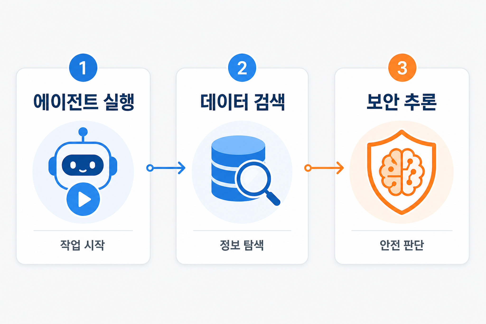
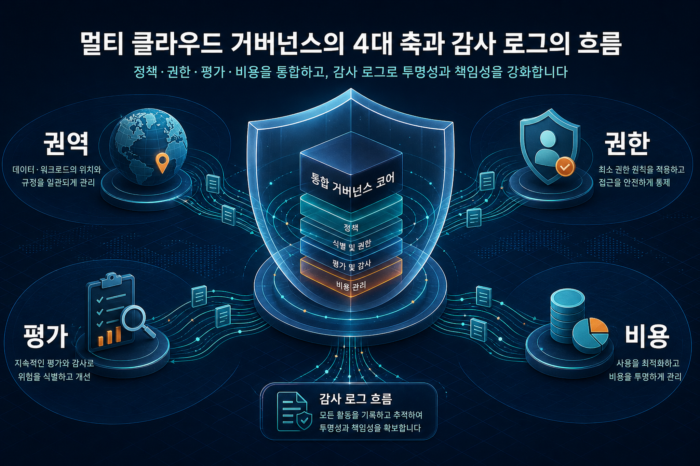

에이전트 실행 환경이 구체화되고 있습니다
베드록 에이전트코어 기반 코딩 에이전트와 음성 에이전트 평가 글이 함께 확인되어, 에이전트가 단순 대화형 도구를 넘어 실행·평가·감사 대상이 되고 있음을 보여줍니다.
검토 포인트: 의사결정자는 에이전트 권한, 실행 로그, 변경 승인 기준을 먼저 점검해야 합니다.
오늘 오전 7시 기준 세 개 블로그 피드에서 후보 50건을 확인했고, 중복 제거 후 신규 9건을 지식형 문서로 저장했습니다. 이번 브리핑은 실제 수집된 게시물의 제목, 설명, 본문 추출 근거만 사용해 기업 의사결정자가 확인해야 할 기회와 리스크를 정리했습니다.
베드록 에이전트코어 기반 코딩 에이전트와 음성 에이전트 평가 글이 함께 확인되어, 에이전트가 단순 대화형 도구를 넘어 실행·평가·감사 대상이 되고 있음을 보여줍니다.
검토 포인트: 의사결정자는 에이전트 권한, 실행 로그, 변경 승인 기준을 먼저 점검해야 합니다.
글로지 사례와 아마존 큐 자원 식별자 글은 검색 품질이 모델 선택만으로 결정되지 않고 파싱, 정규화, 권한, 이전 전략에 좌우된다는 점을 보여줍니다.
검토 포인트: 데이터 검색 과제는 색인 품질과 권한 경계를 같은 설계 산출물로 관리해야 합니다.
유럽 권역 추론과 완전동형암호 추론 글은 모델 활용 범위가 개인정보, 데이터 위치, 암호화 상태의 계산 가능성에 의해 제한될 수 있음을 보여줍니다.
검토 포인트: 규제 민감 업무는 성능 검증과 법무·보안 검토를 병행해야 합니다.

베드록 에이전트코어와 음성 에이전트 평가 글은 모델 호출만이 아니라 작업 지속성, 도구 사용, 대화 품질, 감사 가능성이 함께 다뤄져야 함을 보여줍니다.
오픈서치 기반 자연어 검색과 아마존 큐 자원 식별자 글은 검색 품질, 계정 간 이전, 네임스페이스 권한이 실제 활용성을 좌우한다는 점을 보여줍니다.
완전동형암호 추론과 유럽 권역 추론은 민감 데이터 활용 범위를 넓힐 수 있으나, 지연 시간, 비용, 규제 해석은 확인 필요 항목입니다.
| 번호 | 관찰 주제 | 근거에서 확인된 내용 | 의사결정 검토 포인트 |
|---|---|---|---|
| 1 | 물리 인공지능과 시뮬레이션 학습 | 아마존웹서비스 코리아 기술 블로그는 엔비디아와 함께 시뮬레이션과 실제 학습을 결합해 물리 인공지능 애플리케이션을 준비하는 흐름을 다뤘습니다. | 로봇·제조·현장 자동화에 적용하려면 시뮬레이션 품질, 실제 환경 검증, 모델 변경관리 기준을 함께 확인해야 합니다. |
| 2 | 자연어 이력서 검색과 하이브리드 검색 | 글로지 사례는 오픈서치 기반 검색에 자연어 질의 변환, 하이브리드 검색, 메타데이터 정제 흐름을 결합한 사례로 확인됩니다. | 기업 검색은 단순 벡터 검색보다 파싱, 정규화, 권한, 환각 검증, 검색 품질 평가가 함께 설계되어야 합니다. |
| 3 | 주간 서비스 업데이트 묶음 | 뉴스 블로그는 데이터베이스, 사물인터넷 개발 도구, 컨테이너·에이전트 관련 업데이트를 한 번에 묶어 소개했습니다. | 여러 서비스 업데이트가 동시에 움직일 때는 적용 대상 서비스별 호환성, 릴리스 일정, 운영팀 영향 범위를 분리해 검토해야 합니다. |
| 4 | 유럽 권역 인공지능 추론 | 머신러닝 블로그는 유럽 내 데이터 처리와 모델 접근성을 위해 권역 간 추론을 활용하는 방법을 설명했습니다. | 권역 간 추론은 용량과 모델 접근성을 높일 수 있지만, 데이터 위치, 개인정보, 감사 요구사항은 별도 검증이 필요합니다. |
| 5 | 코딩 에이전트 호스팅 | 베드록 에이전트코어에서 코딩 에이전트를 호스팅해 장시간 작업을 이어갈 수 있다는 주제가 확인됩니다. | 코딩 에이전트는 저장소 권한, 명령 실행, 변경 승인, 감사 로그가 함께 준비되지 않으면 생산성보다 위험이 먼저 커질 수 있습니다. |
| 6 | 수학적 최적화와 의사결정 | 머신러닝 블로그는 직관만으로 어려운 대규모 의사결정에서 수학적 최적화가 성과를 낼 수 있다는 메시지를 제시했습니다. | 최적화 모델은 목적함수, 제약조건, 예외 승인 기준이 비즈니스 책임자와 함께 정의되어야 합니다. |
| 7 | 암호화 상태의 추론 | 세이지메이커 기반 완전동형암호 추론은 민감 데이터가 노출되지 않는 모델 사용 가능성을 보여주는 보안 중심 주제입니다. | 성능, 모델 유형 제약, 운영 비용, 감사 증적이 실제 업무 요건을 만족하는지는 별도 실험이 필요합니다. |
| 8 | 아마존 큐 자원 식별자와 권한 | 아마존 큐 자원 식별자 구조, 계정 간 이전, 네임스페이스 권한이 주요 확인 주제로 나타났습니다. | 다중 계정·다중 테넌트 구조에서는 자원 식별자와 권한 경계가 이전 전략과 장애 진단 속도를 좌우합니다. |
| 9 | 음성 에이전트 대규모 평가 | 아마존 노바 소닉 음성 에이전트를 마이크 없이 자동 평가하는 시험 하네스와 다중 턴 품질 평가가 소개되었습니다. | 음성 에이전트는 텍스트 응답뿐 아니라 오디오 불일치, 도구 호출, 대화 흐름 품질을 함께 측정해야 합니다. |
유럽 권역 추론과 완전동형암호 추론은 데이터 위치와 암호화가 기술 선택의 전제 조건이 될 수 있음을 보여줍니다. 한국 기업도 개인정보, 산업별 규제, 위탁 처리 범위를 먼저 나눠야 합니다.
글로지 사례는 이력서 검색처럼 정규화가 어려운 업무에서 파싱, 동의어 처리, 메타데이터 추출, 품질 검증이 검색 성능의 핵심임을 보여줍니다.
코딩 에이전트와 음성 에이전트 글은 장시간 작업, 다중 턴 대화, 도구 호출 품질을 측정하는 장치가 필요하다는 점을 보여줍니다.
이번 수집 데이터만 기준으로 보면, 즉시 대규모 도입을 전제하기보다 다음 네 가지 검토 항목을 먼저 확정하는 접근이 안전합니다.
에이전트와 검색 시스템이 어떤 계정, 저장소, 도구, 데이터 범위에 접근할 수 있는지 문서화합니다.
음성·코딩·검색 결과의 품질을 사람이 재현 가능하게 확인할 수 있는 표본, 기준, 실패 사례를 정의합니다.
권역 간 추론이나 암호화 추론을 쓰는 경우 데이터가 어디에서 처리되고 어떤 로그가 남는지 확인합니다.
모델 호출, 평가 반복, 검색 색인, 암호화 추론이 비용에 미치는 영향을 별도 항목으로 추적합니다.

유럽 권역 추론은 모델 접근성과 용량을 넓히는 방향이지만, 국내 기업의 개인정보·위탁 처리·국외 이전 판단은 별도 법무 검토가 필요합니다.
완전동형암호 기반 추론은 보안 가능성을 높이지만, 모든 모델과 지연 시간 요구에 그대로 맞는지는 원문 상세와 실험 결과 확인이 필요합니다.
코딩 에이전트는 저장소 변경과 명령 실행을 수반할 수 있으므로, 자동 실행 범위와 사람 승인 조건을 분리해야 합니다.
아래 항목은 이번 수집 문서의 서비스 표기에서 관찰된 빈도입니다. 서비스명 자동 추출 기반이므로 세부 해석은 원문 확인이 필요합니다.